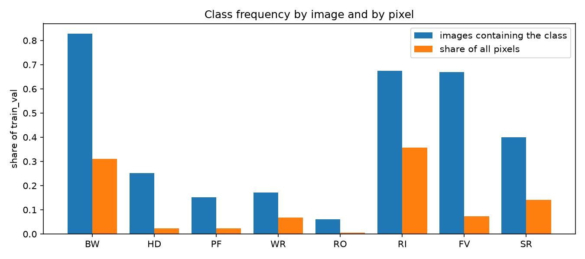
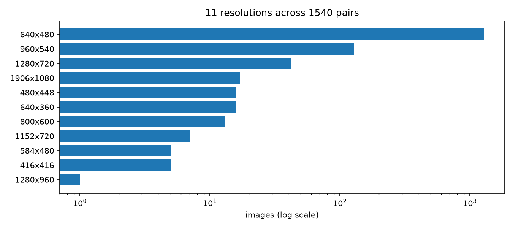
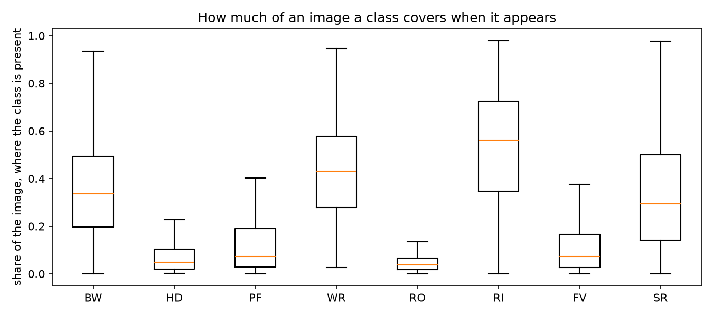
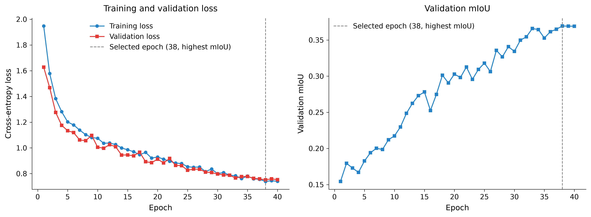
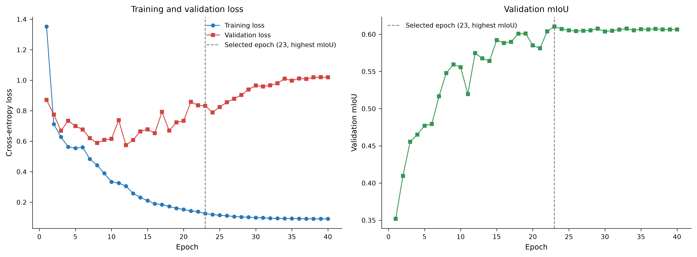
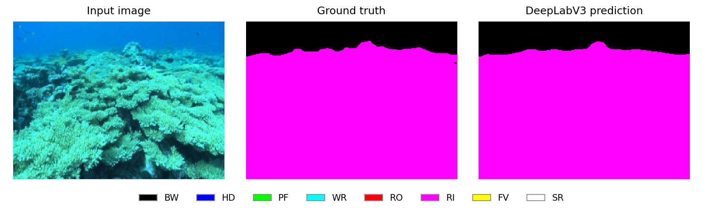
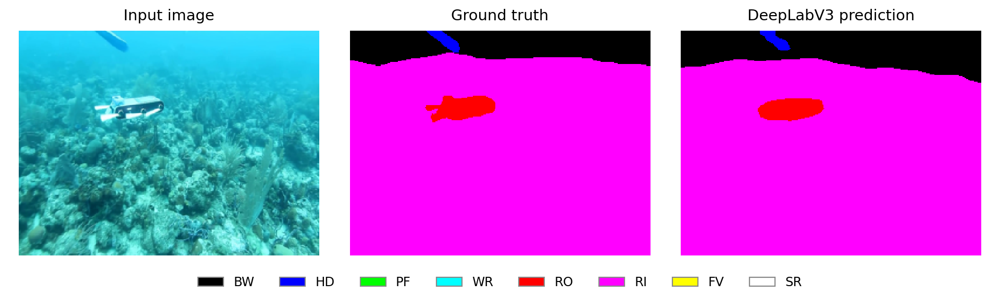
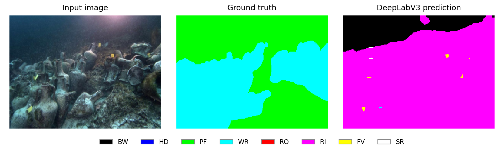
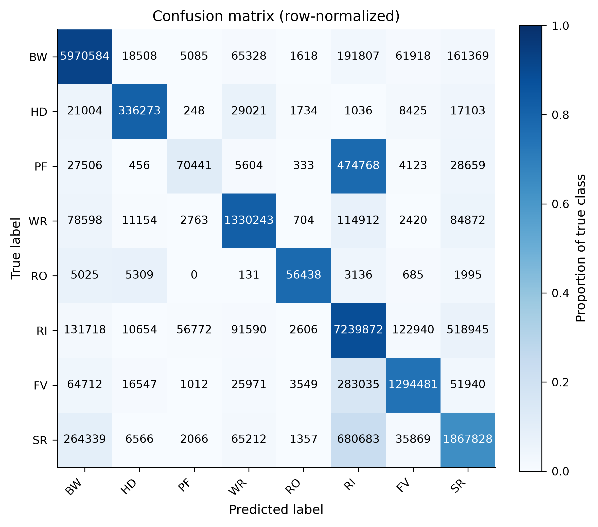

Assignment 2 · Milestone 2 Draft ·
Underwater segmentation
Deep Learning on Large-Scale Data and Specialized Tasks.
SUIM data analysis and preliminary comparison of a U-Net baseline with pretrained DeepLabV3-ResNet50.
Problem statement
Semantic segmentation assigns a category to every pixel of an underwater photograph. Distinguishing water, divers, robots, marine life, vegetation, reefs, wrecks and the sea floor could support underwater scene understanding. SUIM provides a controlled benchmark for this task; these experiments do not establish readiness for deployment.
The input is an RGB image resized to 320 × 240 pixels. Each model returns eight scores per pixel, and the predicted mask takes the class with the highest score. The question is how a model trained from scratch compares with a pretrained segmentation model on the same data partitions, especially for rare classes and object boundaries.
M2 progress
The M2 draft includes EDA, a simple baseline, progress on a pretrained model, and preliminary metrics. Both learned models have completed 40 epochs. All model scores on this page are validation results on 287 images. No final scores on the 110-image official test split are reported.
| Requirement | Completed evidence |
|---|---|
| EDA and data preparation | Mask-quality audit, duplicate checks, class/region/resolution analysis, and committed train/validation lists. |
| Simple baseline | U-Net trained from scratch for 40 epochs. |
| Pretrained model | DeepLabV3-ResNet50 fine-tuned for 40 epochs. |
| Preliminary metrics | Validation mIoU, mean Dice, per-class IoU, learning curves and recorded compute cost. |
Dataset approval
The M1 dataset proposal records Approved, confirmed by a group member. The approval date and any conditions have not been recorded in that document. SUIM semantic segmentation remains the selected task.
Dataset and EDA
SUIM contains underwater RGB images paired with colour-coded segmentation masks. Its eight labels comprise background waterbody (BW), human divers (HD), aquatic plants and sea-grass (PF), wrecks and ruins (WR), robots and instruments (RO), reefs and invertebrates (RI), fish and vertebrates (FV), and sea-floor and rocks (SR).
The downloaded archive has 1,525 training/validation pairs and 110 official test pairs. The audit excludes 85 training/validation pairs with invalid mask colours and ten that duplicate official test images, retaining 1,540 usable pairs. The test split retains all 110 pairs. The software repository uses an MIT licence; the proposal does not assume that this also grants a licence to redistribute the image archive.
| Split | Pairs | Use |
|---|---|---|
| Training | 1,143 | Fit model parameters, with horizontal-flip augmentation. |
| Validation | 287 | Select checkpoints and report M2 preliminary results. |
| Official test | 110 | Reserved for final evaluation after configurations are fixed. |
Duplicate groups stay within one partition. A five-fold stratified group split with seed 42 uses fold 0 for validation; stratification uses each image's rarest present class. The committed training list and validation list are disjoint and unchanged between the recorded runs.
Class imbalance is substantial: reefs occupy 35.64% of usable training/validation pixels, while robots occupy 0.56%. There are 69 robot-containing training images and 17 in validation. Rare categories can contribute little to pixel-wise loss even when their segmentation is poor.


Across all 1,540 usable pairs, including the official test split, the resolution audit identifies 11 original sizes; about 84% of images are 640 × 480. Resizing may remove small objects and fine boundaries. Region-area distributions show that class occurrence alone does not describe how much of an image a class occupies.




Counts, exclusion rules, duplicate groups and split fingerprints are recorded in the EDA summary and proposal.
Methodology
Images and masks are paired by filename stem. RGB mask colours are decoded into integer labels 0–7. Images use bilinear resizing and ImageNet normalization; masks use nearest-neighbour resizing to retain discrete labels. The training image and mask receive the same random horizontal flip. Validation uses deterministic resizing and normalization.
| Model | Initialization and training | Parameters |
|---|---|---|
| U-Net baseline | Trained from scratch; base width 32, RGB input and eight output classes. | 7,763,272 |
| DeepLabV3-ResNet50 | Initialized with torchvision COCO_WITH_VOC_LABELS_V1 weights. The final classifier is replaced with an eight-class head; the auxiliary classifier is removed. | 39,635,528 |
Both configurations use cross-entropy over all eight classes. DeepLabV3 fine-tunes the backbone at a base learning rate of 0.0001 and its classifier at 0.001. BatchNorm running statistics remain fixed; its affine parameters and the rest of the network still train. U-Net uses one base learning rate of 0.001.
The checkpoint with the highest validation mIoU supplies the reported metrics. IoU and Dice are computed from confusion counts accumulated over the whole validation split, then averaged equally across all eight classes, including background. The reported convention assigns zero to an absent-class denominator and ignores no labels.
Experimental setup
Both runs use seed 42, the committed data split, 320 × 240 inputs, AdamW with weight decay 0.0001, float32 training, and a 40-epoch budget. The learning-rate schedule uses five warm-up epochs followed by cosine decay. Both accumulate gradients over four minibatches.
| Setting | U-Net | DeepLabV3 |
|---|---|---|
| Run ID | suim_unet_seed42 | suim_deeplabv3_ce_seed42_2gpu |
| GPU | RTX 4060 Laptop GPU | RTX 3090 recorded device; two GPU processes |
| Physical batch per GPU | 4 | 4 |
| Effective batch | 16 | 32 |
| Python | 3.12.3 | 3.11.11 |
| PyTorch / CUDA build | 2.14.0+cu130 / 13.0 | 2.14.0+cu126 / 12.6 |
| Recorded source | ae6d38e2cb00, clean | c0c00eb640a1, dirty working tree |
The dataset and validation protocol match, but hardware, effective batch size, model size and pretraining differ. These are preliminary configuration comparisons, not an isolated test of pretraining or a controlled speed benchmark.
Preliminary validation results
| Model | Completed epochs | Best epoch | mIoU (%) | Mean Dice (%) |
|---|---|---|---|---|
| U-Net | 40 | 38 | 36.94 | 48.05 |
| DeepLabV3 | 40 | 23 | 61.05 | 73.00 |
DeepLabV3 exceeds the U-Net baseline by 24.11 percentage points in mIoU and 24.95 points in mean Dice in these runs. Each configuration was trained once, so these differences have no across-seed uncertainty estimate.




At epoch 40, U-Net records train/validation cross-entropy of 0.7400/0.7526. DeepLabV3 ends at 0.0906/1.0193, with validation mIoU 60.65%, below its selected maximum of 61.05%. The DeepLabV3 loss gap is consistent with late overfitting, although the runs do not isolate its cause.
Class-level comparison
| Class | U-Net IoU (%) | DeepLabV3 IoU (%) |
|---|---|---|
| BW — Background waterbody | 80.62 | 84.46 |
| HD — Human divers | 30.83 | 69.47 |
| PF — Plants and sea-grass | 0.00 | 10.36 |
| WR — Wrecks and ruins | 41.16 | 69.70 |
| RO — Robots and instruments | 0.00 | 66.70 |
| RI — Reefs and invertebrates | 67.94 | 72.95 |
| FV — Fish and vertebrates | 33.14 | 65.46 |
| SR — Sea-floor and rocks | 41.85 | 49.30 |
U-Net scores zero IoU on PF and RO, despite both classes being present in validation. DeepLabV3 reaches 66.70% robot IoU, but plants remain difficult at 10.36%. Aggregate improvement therefore does not imply that every class is well segmented.
The larger pretrained model performs better in this observed comparison. Architecture, parameter count and effective batch also change, so the result cannot establish how much improvement is caused by pretraining alone.
Input and output examples
Three saved DeepLabV3 validation predictions show what the trained model produces. Each row reads left to right: the input photograph, the ground-truth mask supplied by SUIM, and the model's predicted mask. Colours represent semantic classes, not prediction confidence; matching colours indicate matching class labels.
These are the saved best, worst and best robot-containing examples, ranked by per-image mIoU over classes present in either the target or prediction. They illustrate successful segmentation and failures; they are selected cases rather than a random sample or a replacement for the split-wide metrics.


f_r_274_. The prediction follows the water/reef boundary closely. Black is waterbody (BW); magenta is reef (RI). This is the highest-ranked saved validation example.

d_r_404_. The red robot region (RO) is detected, although its outline is smoother than the annotation and some fine structure is missed. This is the highest-ranked robot-containing validation example.

w_r_162_. The annotation contains plants (PF, green) and wrecks (WR, cyan), but the prediction labels most of the scene as reef (RI, magenta) and water (BW, black). This is the lowest-ranked saved validation example.The colour key follows SUIM: BW = waterbody, HD = divers, PF = plants, WR = wrecks, RO = robots, RI = reefs, FV = fish, and SR = sea-floor. Open any figure to inspect it at full size. Equivalent U-Net prediction panels are not available in the current saved outputs, so these figures do not provide a paired visual comparison of the two models.
Preliminary error analysis
DeepLabV3's pixel confusion matrix covers 22,041,600 pixels, exactly 287 resized validation masks. Of the true PF pixels, 77.59% are classified as RI. Distinguishing aquatic plants from reefs is a priority for further inspection; colour, appearance and class imbalance are possible explanations, not causes established by this matrix.


On target-defined boundaries, DeepLabV3 mIoU is 29.12%, compared with 63.30% in the interior. U-Net records 18.04% and 37.88%, respectively. Boundaries include both sides of four-neighbour label transitions. These regional scores identify localization difficulty and are separate from the whole-mask mIoU.
The selected DeepLabV3 examples above show both a close reef boundary and a severe plants/wrecks failure. A paired qualitative comparison with U-Net on the same images remains to be completed.
Recorded compute cost
| Measurement | U-Net | DeepLabV3 |
|---|---|---|
| Training wall time (s) | 894.97 | 509.48 |
| Peak allocated training memory (MiB) | 996.42 | 2,106.98 |
| Validation inference (s) | 1.390 | 1.402 |
U-Net used an RTX 4060 Laptop GPU; DeepLabV3 used a distributed two-GPU run with RTX 3090 recorded as the device. The memory figure is a process/device allocation measurement, not summed memory across both GPUs. Different devices, software and effective batches prevent a direct architecture speed ranking from these times.
Limitations and next steps
M2 establishes a working baseline and fine-tuned pretrained model, together with EDA and preliminary validation results. The strongest recorded configuration is DeepLabV3, but one seed, different training environments and weak PF segmentation limit the conclusion. The low-resolution resize can obscure small objects, and duplicate filtering does not establish complete independence of underwater scenes.
For M3, the planned controlled experiment compares DeepLabV3 cross-entropy with an equal-weight cross-entropy/soft-Dice loss, keeping other settings fixed. This experiment has not yet been reported. Further work includes paired U-Net/DeepLabV3 qualitative comparisons, detailed failure inspection, checkpoint access and final report/presentation deliverables. The official test set will be evaluated after model configurations are fixed.
Evidence and reproduction
- Source code: a2/m1 branch
- Dataset proposal: SUIM task, exclusions, splits and experiment plan
- EDA and split files: EDA outputs · Committed train/validation lists
- U-Net run: Training summary and resolved configuration
- DeepLabV3 run: Training summary · Validation metrics and confusion counts · Run configuration
- Installation, training and evaluation: README reproduction commands
- Final deliverables: checkpoint downloads, the final PDF report, slides and presentation video are not linked in this M2 draft.
The saved run summaries define the settings behind this page. The current U-Net YAML uses physical batch size eight, while the reported run used four. Reproducing the reported run requires its recorded configuration. DeepLabV3's effective batch of 32 additionally requires two GPU processes. Checkpoints and prediction tensors are excluded from Git; plotting the saved validation evidence requires obtaining or regenerating those local artifacts.
Group members
| Full name | Student ID | Assignment 2 responsibility |
|---|---|---|
| Vu Duc Viet Anh | 2352074 | SUIM data loader and augmentation, EDA and assignment page. |
| Tran Lam Anh | 2352067 | Pretrained DeepLabV3 implementation and fine-tuning. |
| Le Nguyen Khang | 2352470 | Segmentation metrics, preliminary evaluation and qualitative examples. |
| Tran Nguyen Giap | 2352284 | U-Net baseline implementation and training. |